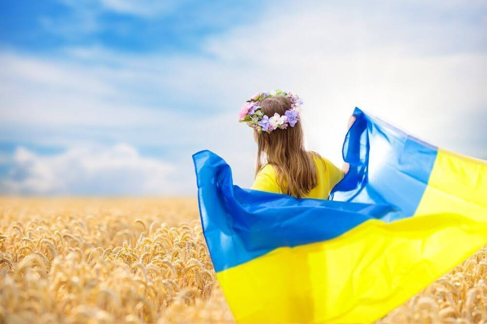
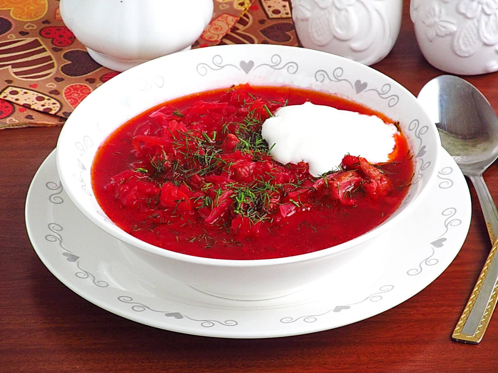

УКРАЇНСЬКА
КУХНЯ
Кулінарні традиції
Про Країну
Тісто з картоплею та різними начинками -
Вареники
Суп з буряка та картоплі -
Борщ

Голубці з рисом і м'ясом -
Голубці
Сайт створив Андрій Федишин 2023